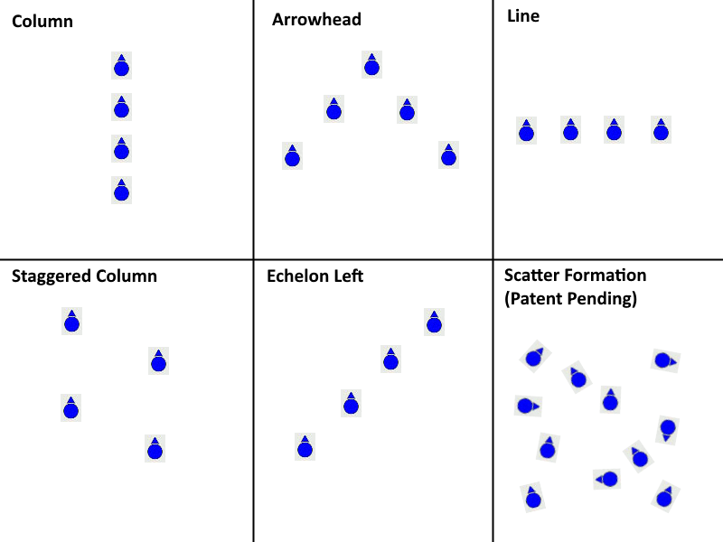
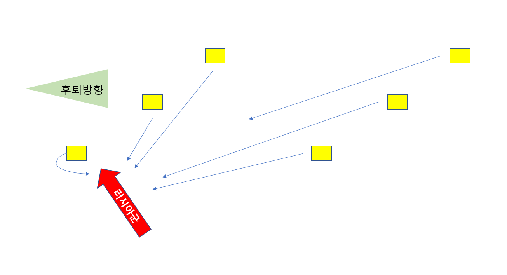
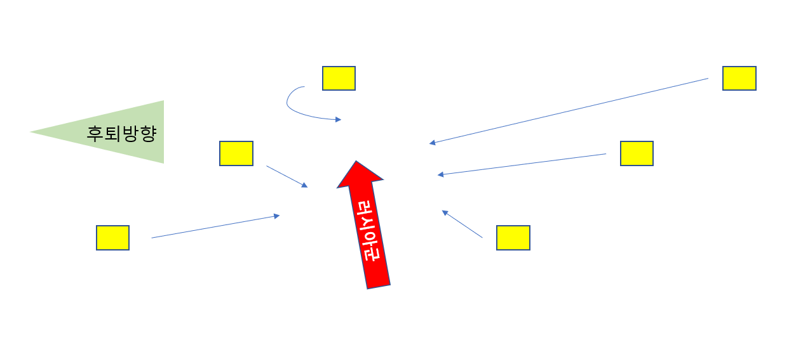
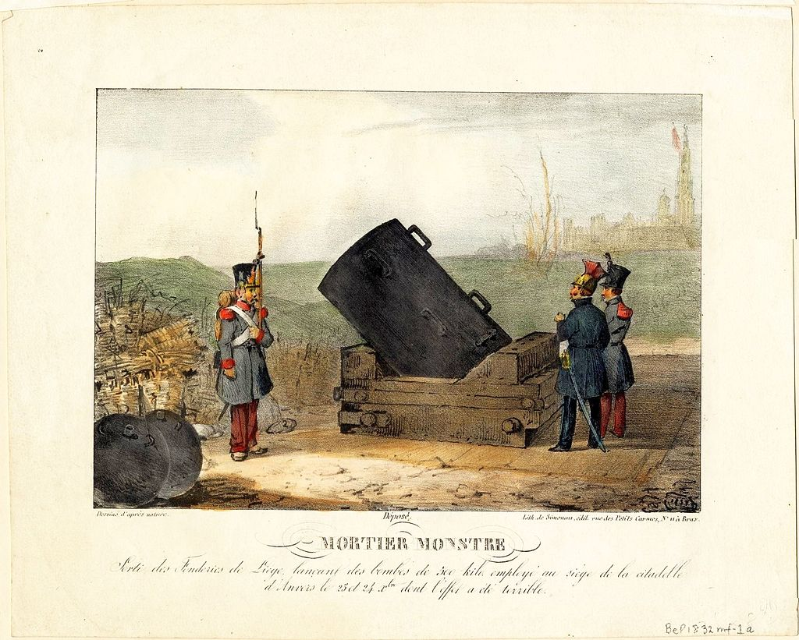

대포와 낙오병 - 혼란 속의 후퇴
게시: 2021-06-21T06:30:52+09:00
나폴레옹은 후퇴할 때 각 부대가 제형(梯形, echelon, 사다리꼴)으로 행군하도록 지시했습니다. 에셜란 진형은 한자로나 한글로나 사다리꼴 모양이라고 해석이 됩니다만 실은 이건 사다리꼴 모양이 아니라 사선 대형을 말하는 군사용어입니다. 즉 부대들이 횡대나 종대가 아니라 비스듬하게 사선을 이루는 방식입니다. 이런 에셜란은 육군 부대 뿐만 아니라 해군 함대나 공군 편대들도 많이 사용하는 진형입니다. 이렇게 육해공에서 보편적으로 사용하는 것에는 이유가 있습니다. 가장 대표적인 것은 똑바로 횡대나 종대를 이룰 때에 비해 각 부대/군함/항공기에서 훨씬 넓은 시야를 갖게 된다는 것입니다. 또한 똑같은 수의 병력이 이동할 때 훨씬 더 넓은 범위의 구역을 훑으며 지나가게 된다는 것도 장점입니다. 이는 적을 수색하며 전진할 때도 유리했지만, 1812년 10월말 황량한 모스크바-스몰렌스크 대로를 따라 이동하는 나폴레옹의 부대처럼 먹을 것과 땔감을 구하는 부대에게도 더 유리했습니다.

(군부대, 함대, 전투기 편대 등이 취할 수 있는 여러가지 형태의 대오에 대한 도식입입니다.) 하지만 나폴레옹이 에셜란 대형을 지시한 것에는 더 큰 이유가 있었습니다. 그들이 쫓기는 신세라는 것이었지요. 최후미 부대가 러시아군에게 따라 잡히거나 측면, 즉 남쪽에서 대오의 중간을 치고 들어와 후미 부대를 고립시킨 뒤 몰살시키려 든다고 할 때, 더 앞쪽에서 후퇴하던 부대가 되돌아와 러시아군을 협공하려면 이런 사선 대오가 훨씬 유리했습니다. 후방 부대가 왼쪽 뒤로 처지는 형태면 left echelon, 오른쪽 뒤로 처지면 right echelon이라고 부릅니다. 나폴레옹이 left echelon으로 후퇴했는지 right echelon으로 후퇴했는지는 기록을 찾지 못했는데, 상식적으로 right echelon으로 후퇴했을 것입니다. 러시아군이 남쪽 방향에서 습격해올 가능성이 높으니, 그렇게 right echelon으로 행군하면 러시아군의 습격을 미리 포착하기도 쉽고 (아래 그림1) 또 러시아군 입장으로서는 자칫하다가는 제 발로 프랑스군의 포위망 안으로 뛰어드는 상황이 (아래 그림 2) 될 수도 있기 때문이었습니다.

(남쪽에서 습격해온 러시아군이 right echelon의 맨 앞쪽 부대를 건드리면 다른 부대들은 미리 경고를 받고 도우러 올 수 있습니다.)

(혹시 러시아군이 right echelon의 중앙 부대를 건드리면 제발로 프랑스군의 포위망에 뛰어드는 꼴이 됩니다.) 이렇게 나름 최선을 다해 후퇴를 하고 있었지만 그래도 역시 후퇴에는 온갖 어려움이 따랐습니다. 가장 큰 문제는 역시 수송 엔진, 즉 말이 없다는 것이었습니다. 그리고 그 문제를 더 악화시킨 것은 나폴레옹의 체면이었습니다. 많은 지휘관들이 신속한 후퇴에 방해만 될 뿐 유사시 별 도움이 될 것 같지 않은 여분의 대포는 버리고 가기를 원했지만, 나폴레옹은 허락하지 않았습니다. 부상병과 노략품을 실은 마차는 몰라도 군기와 대포는 당시 전투에서 패배한 측이 버리고 가는 것이었습니다. 나폴레옹은 자신이 버리고 간 대포들을 러시아군이 자랑스럽게 전시하며 '나폴레옹을 깨부수고 빼앗은 대포'라고 자랑하는 것을 참을 수 없었고, 그것으로 인해 자신의 '전술적 후퇴'가 유럽 각국에서 '원정 실패'로 받아들여지는 것을 두려워 했습니다. 결국 대포 수송이 모든 것에 우선하는 일이 되었습니다. 여분의 포탄과 탄약은 길가에 버리거나 폭파시켰습니다. 그래도 말이 부족해지자 지나가는 병사들을 강제로 선발하여 포가를 밀게 했습니다. 또 강압적으로 다른 병사들로부터 말을 빼앗을 수 밖에 없었습니다. 노략질한 물건들을 싣고가는 개인 짐마차가 우선 대상이었으나, 곧 부상병을 싣고 가는 병원마차에서도 말을 강제로 빼앗았습니다. 10월 30일 그즈하츠크(Gzhatsk)를 지나던 라리부아지에르(Lariboisiere) 장군의 참모 페상(Henri-Joseph Paixhans)은 가슴이 메이는 광경을 보았습니다. 한 무리의 마차들이 길 가에 버려져 있었는데, 여기서 손과 팔들이 밖을 향해 애타게 뻗어져 있고 끊임없는 탄원과 울음소리가 새어나오고 있었습니다. 이 마차들은 부상병들을 싣고 가다 포병대에게 말을 빼앗기고 길가에 버려진 것들이었습니다. 마차 위의 부상병들은 제발 자기들을 버리고 가지 말라고 지나가는 병사들에게 호소하며 외쳤지만, 다들 고개를 돌릴 뿐 누구도 그들을 도우려 하지 않았습니다.

(페상(Henri-Joseph Paixhans)은 당시 31세로서, 나폴레옹 치하에서 기술 사관학교(École Polytechnique)를 졸업하며 청소년기를 지낸 제1세대 제국 시민이었습니다. 포병 장교였던 그는 러시아에서 살아돌아갔고 후에 프랑스 포병대를 위해 여러가지 신무기를 발명하여 많은 공을 세웠습니다. 가령 위 그림에 보이는 것은 페상이 발명한 '괴물 박격포'(Mortier monstre)로서, 1832년 벨기에 독립을 둘러싸고 프랑스와 네덜란드 간에 벌어진 전쟁 중 안트베르펜 포위전에서 사용된 것입니다.) 문제는 이렇게 말을 빼앗겨 버려지는 마차와 수레, 그리고 무거운 배낭을 견디지 못한 병사들이 결국 길가에 내동댕이친 이런저런 물건들이 일으키는 문제였습니다. 제형 대오로 후퇴하는 맨 앞 부대, 즉 나폴레옹과 근위대는 상대적으로 어려움이 적었습니다만, 제형 대오는 필연적으로 뒤에 따라오는 부대들이 걸어야 할 길을 말과 사람, 수레바퀴가 짓이겨 놓아 울퉁불퉁한 진흙 구덩이로 만들어 놓았습니다. 거기에다 가는 곳곳에 버려지는 차량과 짐짝들로 인해 뒤를 따르는 부대들의 행군 속도가 점점 더 느려졌습니다. 그렇게 길가에 버려진 짐들과 죽은 말, 죽어가는 부상병들은 길을 막는 것은 물론 뒤따르는 부대들의 사기도 크게 저하시켰습니다. 가끔 나타나는 개울을 건너는 여울목 등 병목 현상이 나타나는 곳에서는 특히 버려지는 짐짝과 수레가 많았고, 그로 인해 병목 현상이 더 심해졌으며, 이는 앞의 정체 상황을 모르고 뒤에서 밀려오는 부대들로 인해 난장판을 만들기 일쑤였습니다. 이런 혼란 속에서 낙오자들도 속출했습니다. 이들은 진격할 때 속출했던 탈영병들과는 또 달랐습니다. 러시아군이 뒤를 추격하고 있으며 코삭들에게 걸리면 목숨을 부지하지 어렵다는 것을 알고 있었으므로 부대를 이탈해 어디론가 도망치려는 병사들은 거의 없었습니다만, 그게 오히려 상황을 더 악화시켰습니다. 일부러 그랬든 정말 어쩔 수 없는 상황 때문에 그랬든 소속 부대에서 낙오된 병사들은 그 뒤를 따르던 다른 부대에 빌붙어서 함께 후퇴했는데, 대개 이들은 다른 부대의 대오 속에 합류하지는 않고 그 주변을 따르던 민간인들, 즉 종군 상인 및 원래 모스크바에 살던 외국인 민간인들과 함께 '비전투원' 자격으로 개별적으로 따라붙었습니다. 많은 경우 이들은 무거운 소총도 이미 버린 뒤였으므로 유사시 러시아군과 싸우는데 도움이 되지 않았을 뿐만 아니라, 규율을 따르며 대오를 이룬 부대원들의 사기에도 좋지 않은 영향을 미쳤습니다. 부대원들은 측면이나 후방에서 가끔씩 코삭들이 나타나면 보병방진을 이루어 종군 상인들과 민간인들을 그 방진 안에 보호해주었는데, 전방 부대에서 흘러들어온 낙오병들이 방진에 참여할 생각은 하지 않고 방진 내부의 안전한 곳으로 민간인들과 함께 숨는 것을 보고 '우리만 호구 노릇을 하고 있다'라는 피해의식을 받았던 것입니다. 페젠삭(Raymond de Fezensac) 대령은 그때 후퇴 대열의 후방에 속하는 불운을 겪고 있었는데, 이런 얌체 낙오병들 때문에 미칠 지경이었습니다. 그는 부대원들에게 명하여 타부대 낙오병들이 대오 곁으로 다가오거든 개머리판으로 후려갈겨 쫓아내라고 명령하고 그런 낙오병들에게 '코삭이 나타나도 너희는 절대 우리 부대 방진 안으로 들어오지 못하게 할 것이다' 라고 소리쳐 협박했으나 아무 소용이 없었습니다. 어차피 그 낙오병들은 따로 갈 곳이 없었던 것입니다. 이런 낙오병들은 끈질기게 부대 주위를 어슬렁거리며 따라와서 밤에 부대가 노숙을 할 때면 그 진영 안으로 들어와 구걸을 하거나 도둑질을 했습니다. 가장 나쁜 것은 이들이 주변에 있음으로 해서 페젠삭 대령의 연대원들도 이들에게 섞여 한두명씩 탈영하기 쉬웠다는 것이었습니다. 그렇게 혼란과 원망, 슬픔과 절망 속에서 후퇴하던 11월 2일 저녁, 드디어 러시아군의 습격이 시작되었습니다. Source : 1812 Napoleon's Fatal March on Moscow by Adam Zamoyski
https://en.wikipedia.org/wiki/Echelon_formation